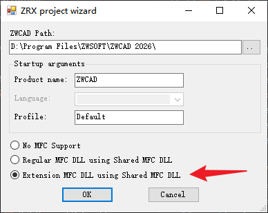
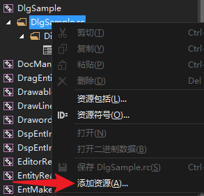
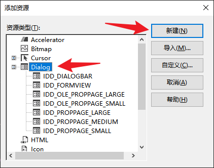
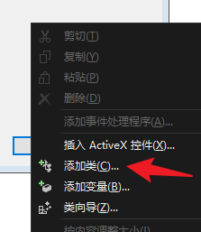

通过 ZRX 接口创建对话框，开发者可以使用 MFC 创建模态对话框（Modal Dialog）和非模态对话框（Modeless Dialog）。
- 模态对话框（Modal Dialog）：模态对话框是一种对话框，它会阻止用户与其他窗口交互，直到关闭该对话框。
- 非模态对话框（Modeless Dialog）：非模态对话框是一种对话框，它允许用户在打开对话框的同时与其他窗口进行交互。
本教程将展示如何在 ZRX 工程中创建这两种类型的对话框，并将其嵌入到 ZWCAD 环境中。
创建ZRX工程
使用ZRX向导创建使用共享MFC DLL的扩展MFC DLL

创建对话框
在Visual Studio中打开资源视图窗口，找到对应工程的资源目录，右键选择添加资源

选择Dialog，点击新建按钮

生成对话框类
完成对话框设计后，右键对话框框体，选择添加类

将生成的MFC类中对话框基类CDialogEx修改为CZcUiDialog
// head file
class CMyDialog : public CZcUiDialog
{
public:
...
}
// cpp file
IMPLEMENT_DYNAMIC(CMyDialog, CZcUiDialog)
CMyDialog::CMyDialog(CWnd* pParent /*=nullptr*/)
: CZcUiDialog(IDD_DIALOG1, pParent)
{
}
CMyDialog::~CMyDialog()
{
}
void CMyDialog::DoDataExchange(CDataExchange* pDX)
{
CZcUiDialog::DoDataExchange(pDX);
}
BEGIN_MESSAGE_MAP(CMyDialog, CZcUiDialog)
END_MESSAGE_MAP()
显示对话框
模态对话框
// 切换资源，防止对话框资源冲突
CZcModuleResourceOverride res;
CMyDialog dlg;
dlg.DoModal();
非模态对话框
// 全局变量
CMyDialog* myDlg = nullptr;
// 显示对话框
void ShowModelessWindow()
{
CZcModuleResourceOverride res;
if (myDlg == nullptr) {
myDlg = new CMyDialog(zcedGetZcadFrame());
myDlg->Create(IDD_DIALOG1);
}
myDlg->ShowWindow(SW_SHOW);
}
// 不再使用对话框时需要销毁对话框资源
void unloadapp()
{
if (myDlg != nullptr) {
delete myDlg;
myDlg = nullptr;
}
}
模态对话框与绘图界面交互
由于模态框对话框运行时，无法操作当前程序中其他窗口，但使用过程中可能又需要与绘图界面进行交互，如选择实体等。
可以通过CZcUiDialog基类中封装好的BeginEditorCommand、CompleteEditorCommand和CancelEditorCommand方法。
void CMyDialog::OnClickedPickPointBtn() {
// 隐藏对话框，切换焦点到CAD界面
BeginEditorCommand();
zds_point pt;
if (zcedGetPoint(NULL, L"\nPick a point:", pt) == RTNORM) {
// 恢复对话框
CompleteEditorCommand();
zds_printf(L"\npt: %.4f, %.4f, %.4f", pt[0], pt[1], pt[2]);
}
else {
// 取消命令，对话框退出
CancelEditorCommand();
}
}